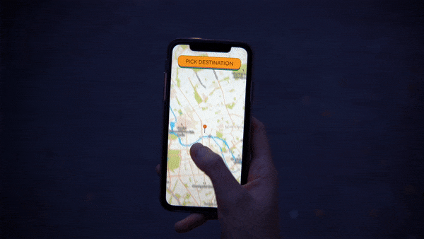
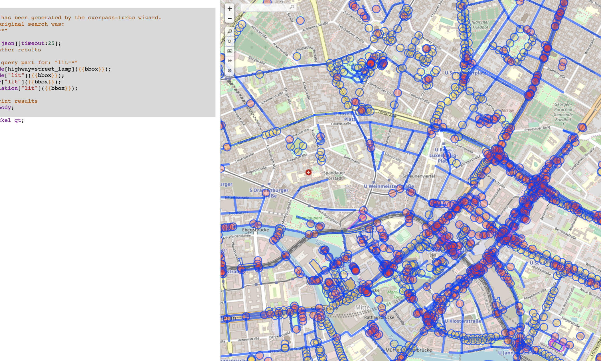
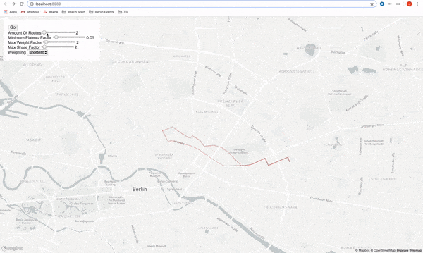
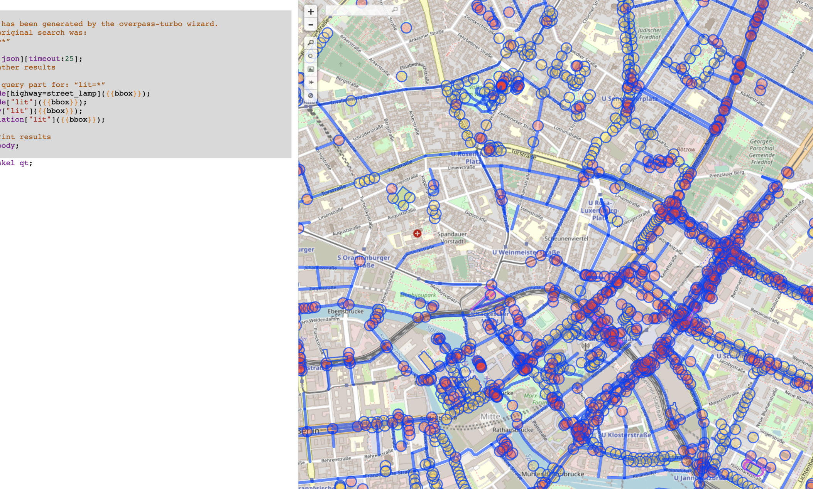
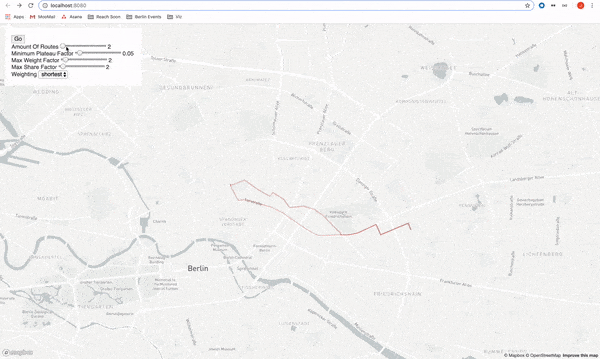

Sproute - 2019
A navigation app that diversifies how you travel
Sproute is a navigation app that diversifies how you travel by offering a set of characters that get you to your destination in different ways. For example maybe you want to avoid dark and unlit streets at night, or maybe you could go sightseeing on the way to your destination?
Sproute was the outcome of my 4 month residency with Move Lab: an urban mobility lab based in Berlin. Particular shout out Florian Porada, the lab's developer, who worked with me on making the idea a reality.
Meet the team
This initial ensemble of characters were chosen to appeal to different facets of a person's needs, and also to exemplify the scope of potential future characters: from precise functionality, to open-ended exploration.
Sightseer
The Sightseer finds points of interest between you and your destination and helping you to explore while having an end destination in mind.
Nightlight
The Nightlight is a welcoming blob of light that helps you navigate confidently at night by avoiding unlit streets as much as possible.
Commuter
The Commuter generates 100 routes between two locations of your choice. Every time you travel you are provided with a new route.

Sightseer
The Sightseer finds points of interest between you and your destination and helping you to explore while having an end destination in mind.
Nightlight
The Nightlight is a welcoming blob of light that helps you navigate confidently at night by avoiding unlit streets as much as possible.
Commuter
The Commuter generates 100 routes between two locations of your choice. Every time you travel you are provided with a new route.
How did this come about?
With Sproute I wanted to continue evaluating the ideas that I had come up with during my Agency Agency project. Namely what technology might feel like with less of a focus on efficiency and 'frictionlesness'
Most navigation apps are built on the assumption that the most useful route for you is always the fastest and most efficient. Sproute, instead, started by asking how many different routes could we get from A to B? And what other routes could we take if we added a couple of minutes to our journey time?
What was the process?
 



I planned my work through the lenses of Role, Look and Feel, and Implementation.
Throughout the process, I was running small 'role' experiments, such as keeping a map of Berlin and drawing every single street I went down, or trying to navigate without maps, I also made a set of way-finding activity cards and persuaded employees from the lab's mother company to try them out. The workshop that followed these activity cards showed that the role-playing aspects of the more oddball activities (like asking people to be stealthy spies) generated the most engagement and reflection.
This power of characters to shift behaviour became the foundation for Sproute. Once we settled on this direction, the character selections screens from video games seemed like the best interaction metaphor that people would understand quickly, while also putting them in a playful mindset.
Of course, the whole point of this was to show that technology can be so much more than just 'efficient', so there was just as much work on the implementation end to find which data-sources and algorithms would be feasible and helpful.1
We sourced street-light data, landmarks, and map graphs from Open Street Map (OSM), and explore the Graphhopper API to understand what parameters we could affect the route generation.
Applied Speculation
The goal of the residency was to make a covertly speculative project, one that normal people would want to try out, but that would still get the point across. I would say we succeeded on that front.
This whole project was obviously also a metaphor for other efficiency minded uses of technology. And I admit it, most of the time, the fastest route probably is the one that we want. But, somehow I see more and more friends and family not even realising that technology could even help them find anything other than the 'fastest route'2. And I think that's a shame.
- Again shoutout to Florian, we became good friends working together on this project.
- For example with the street light data from OSM, data's a source of data that most people don't even realize exists.